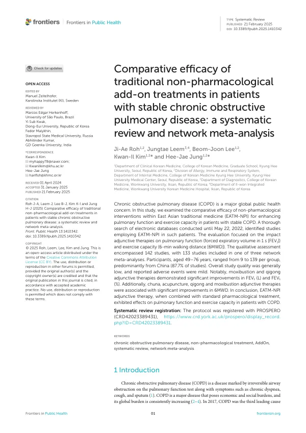

Comparative efficacy of traditional non-pharmacological add-on treatments in patients with stable chronic obstructive pulmonary disease: a systematic review and network meta-analysis
Roh JA, Leem J, Lee BJ, Kim KI, Jung HJ
Frontiers in Public Health 13:1410342

첫 장 · 오픈액세스First page · open access
논문 소개Summary
안정기 만성폐쇄성폐질환 환자에게 약물치료에 더해 쓰는 동아시아 전통의학의 비약물 치료가 폐기능과 운동능력을 얼마나 끌어올리는지 네트워크 메타분석으로 비교했습니다. 2022년 5월 22일까지 검색해 142편을 질적으로 검토하고 그중 133편을 세 개의 네트워크 메타분석에 넣었습니다. 참여자는 49세에서 76세였고 군당 9명에서 139명이었으며 87.7%가 중국 연구였습니다. 1초 강제날숨량에서는 뜸과 기공이, 6분 걷기 거리에서는 추나·침·기공·뜸이 유의한 개선을 보였습니다. 다만 연구의 전반적 질이 낮았고 보고된 이상반응은 경미했습니다.
A network meta-analysis comparing non-pharmacological East Asian traditional medicine treatments added to standard drug therapy in patients with stable chronic obstructive pulmonary disease, for pulmonary function and exercise capacity. Searches to 22 May 2022 yielded 142 studies for qualitative assessment, 133 of which entered one of three network meta-analyses. Participants were aged 49 to 76, with 9 to 139 per group, and 87.7% of studies came from China. Moxibustion and qigong significantly improved forced expiratory volume in one second, while chuna, acupuncture, qigong and moxibustion improved six-minute walking distance. Overall study quality was low and reported adverse events were mild.
인용Cite
Roh JA, Leem J, Lee BJ, Kim KI, Jung HJ. Comparative efficacy of traditional non-pharmacological add-on treatments in patients with stable chronic obstructive pulmonary disease: a systematic review and network meta-analysis. Frontiers in Public Health. 2025;13:1410342. doi:10.3389/fpubh.2025.1410342